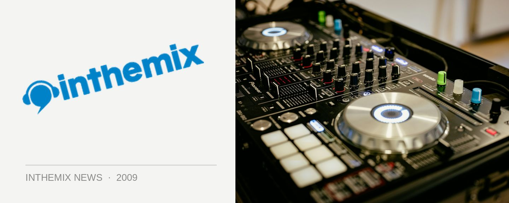

Oxford Art Factory wants fresh hands on the decks
That’s right, that hipper-than-hip venue the Oxford Arts Factory is looking for new DJs with “innovative” taste in music. They’ve got their eye out for real bedroom bangers, proper young guns who’ve had little or no experience playing in front of a crowd. The venue’s promoters emphasises they’re not too hung up on genres or technical wizardry, and are more seeking the DJs who can bring the party.
Wanna have a crack? DJs who have played in other venues need not apply, but if you’d like a gig at the OAF the please submit a live mix with track listing, your name and your DJ name if you have one), along with your email address and phone number. Post CDs to DEMO / OXFORD ART FACTORY, 38-46 Oxford St, Darlinghurst, NSW, 2010, or email a link to download your mix to demo@oxfordartfactory.com.